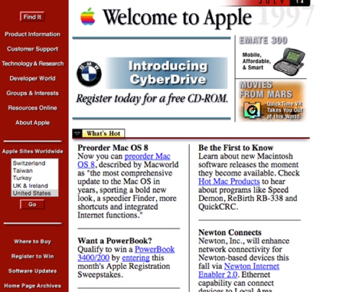

The old web was fun
Friday, June 19, 2020
I was around during the birth of the web in the early 1990s and have enjoyed every twist and turn since then. Even before creating my own personal website and blog (this site) in 1998, I maintained the Department of Science website at UW (originally http://sciborg.uwaterloo.ca).
And while I’ve enjoyed watching the evolution of the web, I still think the old web was more fun. In this blog post, I’ll tell you why. But first, let’s cover some background info!
1. What is the Internet?
The Internet was born when the ARPANET/NSFnet computer networks were sold off to private companies (later called Internet Service Providers, or ISPs) in the early 1990s.
However, the Internet was just the physical network that interconnected computers and allowed them to send information back and forth. It was Tim Berners-Lee’s Hypertext Transfer Protocol (HTTP) that made the Internet useful to the average person.
2. What is the Web?
With HTTP, anyone could serve pages of information to other computers on the Internet, and the worldwide collection of these pages in the 1990s was called the World Wide Web (or web for short). Each page of information was called a webpage and formatted using Hypertext Markup Language (HTML). Computers that shared webpages were called web servers and could host one or more different websites that contained a collection of related webpages. To access a website on a web server across the Internet, you used a web browser application on your computer.
Early on, I used the Mosaic web browser before Netscape Navigator became popular, but later on most people used Internet Explorer (which was actually an excellent web browser in the 1990s). Want to find a list of webpages that have information about a specific topic? Well, that’s where a search engine website can help you out. Yahoo! was common, but my favorite search engine was AltaVista (below in Netscape Navigator) until a colleague of mine excitedly ushered us to his computer to show us Google, which returned results much faster than other search engines at the time.
3. What did old webpages look like?
Webpages from the 1990s weren’t exactly polished by today’s standards. For example, this is what Apple’s website looked like back in 1997:

Also remember that you weren’t viewing webpages on a fast PC with a 27” widescreen LCD monitor back then. Instead, you were probably using a chunky 15” cathode ray tube monitor (shown right) on an early Pentium with 32MB of RAM. Worse yet, you probably had incredibly slow (e.g. dial-up) Internet access to your ISP.
Thus, smaller webpages took a few seconds to load, while flashier websites with multiple graphics took significantly longer.
But on the flip side, the process of getting information on your computer from somewhere else in the world was an extreme novelty at the time, and worth the wait. The whole rise of the web in the 1990s happened during a time of intense technological advancement and optimism. Computers were suddenly everywhere and considered the future. Even The Rolling Stones performed their song Start Me Up for the launch of Windows 95.
Ultimately, this meant that navigating a website back in 1997 was far more exhilarating and rewarding than navigating a website today.
4. What did my website look like back then?
If you’re curious as to what my personal website and blog looked like back in 1998-2004, you can check it out here: https://triosdevelopers.com/jason.eckert/old/
I originally made it in the vi editor on an UltraSPARC-based Sun Ultra 10 computer running Solaris UNIX, but later continued editing it on a PowerPC-based Macintosh computer running Mac OS X UNIX (hence the two animated GIFs on the main page).
5. So, why was the old Web more fun?
You probably noticed from my old website that I did it to have fun. And it was fun. After all, anyone could make a webpage back in the 1990s using a text editor because HTML was incredibly easy to learn without a textbook. If you saw a webpage that you liked when browsing the web, all you needed to do was view the associated HTML source code in your web browser (e.g. View menu > Source). You could easily identify what the code did and then copy the parts you needed to your own HTML file. To host the webpage, you could upload to your ISP, which often gave you free web space on their web servers for personal websites. Of course, tech-savvy people often ran their own web server on Linux or BSD UNIX using the Apache web server program.
Now, of course, you could argue that places like Wix.com make it easy to create and host websites today. And that is true - however, you have to use the features and templates that they provide only. In other words, you don’t have 100% creative control. Moreover, it’s not cheap, and additional features cost additional money.
Full creative control led to some pretty awesome content back in the 1990s. Many webpages were only text. But they were just as good (or better) than flashy ones because the person making the webpage focused on the content, and you focused on reading it.
To illustrate this, check out: http://motherfuckingwebsite.com/
Other webpages and blogs were colorful and gaudy, but held a creative aesthetic that you don’t see too much today outside the indie artist scene. After all, someone poured their time and soul into it. You could look at a 1990s webpage and easily understand more about the person who made it.
But what made the old web the most fun was that people didn’t take it too seriously. People shared information, wrote blogs, made fansites, and loved doing it. Even official websites from companies liked to have fun with the webpages they created. The end goal at the time was to share information in this new information age, as opposed to the aggressive monetization that drives the web today.
Want to surf the old web and see for yourself? Navigate to http://oldweb.today/